La Ruta del Tannat Cepa, origen e identidad
Recorre el circuito enoturístico que custodia la génesis del vino uruguayo. Una experiencia que entrelaza la epopeya de Pascual Harriague, 4 bodegas de excepción, viñedos en suelos basálticos y el bienestar de las aguas termales de Salto.
Don Pascual Harriague y la Cepa que Conquistó el Mundo
En el último tercio del siglo XIX, el inmigrante vasco-francés Don Pascual Harriague transformó la geografía productiva de Salto. Tras minuciosos ensayos con cepas traídas de los Pirineos, logró aclimatar en el suelo basáltico y el clima subtropical salteño la uva Tannat (entonces denominada Harriague).
Hoy, el Espacio Cultural Bodega Harriague (Punto Cero) y el proyecto internacional U-riharri rescatan las murallas de piedra del antiguo saladero y bodega de La Caballada, convirtiendo a Salto en un polo de turismo cultural, vitivinícola y gastronómico de relieve internacional.

Archivo Histórico Municipal
Ruinas de Bodega Harriague · Salto, Uruguay
El Pionero
La historia de Don Pascual Harriague, el inmigrante vasco-francés que convirtió una cepa desconocida en la identidad vitivinícola de todo un país.
Don Pascual Harriague
Hasparren, Francia · 1819 — París, 1894
Nace el 14 de abril en Hasparren, en el País Vasco francés (Bajos Pirineos).
Descubrí más →Hasparren, su pueblo natal, vivió como gran parte del País Vasco francés del siglo XIX una fuerte emigración hacia el Río de la Plata: miles de vascos cruzaron el Atlántico en busca de oportunidades en Uruguay y Argentina.
← VolverLlega a Montevideo desde Francia y comienza a trabajar en un saladero en la zona del Cerro.
Descubrí más →Los saladeros, como aquel del Cerro de Montevideo donde empezó a trabajar, eran el motor exportador de la economía uruguaya del siglo XIX: allí se salaba carne vacuna para enviarla a Brasil, Cuba y Europa.
← VolverSe instala en Salto y funda el saladero La Caballada, a orillas del río Uruguay.
Descubrí más →Antes del vino, Harriague ya era un empresario del rubro cárnico-ganadero con un gran saladero propio sobre la costa del río Uruguay: la misma tenacidad comercial que después aplicaría a la vid.
← VolverPlanta en sus tierras las primeras cepas de Tannat, traídas desde Concordia (Argentina). El viñedo llegaría a cubrir cerca de 200 hectáreas y el vino se popularizó con su propio apellido: "Harriague".
Descubrí más →Las primeras plantas no vinieron directo de Francia: se las compró a otro vasco, de apellido Lorda, que las cultivaba en Concordia (Argentina). Por eso, del otro lado del río, esa misma cepa se conoce como "Lorda".
← VolverFallece el 12 de enero en París. Su nombre queda para siempre unido a la cepa que aclimató en Salto.
Descubrí más →Durante décadas circularon datos imprecisos sobre su muerte. Recién en 2017 se halló en París su partida de defunción real, lo que permitió corregir los registros históricos sobre el pionero del Tannat.
← VolverEl INAVI declara el 14 de abril — su fecha de nacimiento — Día Nacional del Tannat en su homenaje.
Descubrí más →En 2019, al cumplirse 200 años de su nacimiento, Salto y Hasparren —su pueblo natal en el País Vasco francés— celebraron juntas el bicentenario de Harriague con festejos binacionales.
← VolverLa Copa de Tannat
Girá la copa, liberá sus aromas y descubrí con qué disfrutarla en Salto.
Armá tu Tannat
Un Tannat de cuerpo medio, de taninos firmes y de acidez equilibrada.
Girá la copa: cada vuelta libera aromas. Tocá uno para conocerlo.
Notas típicas de la cepa Tannat; cada vino y cada bodega tiene su propio perfil. Ilustración interactiva.
Con qué maridarlo
- Cordero a las brasas
- Carne a la parrilla
- Chocolate amargo
Los taninos firmes se suavizan con la proteína y la grasa de la carne.
El paquete completo de la Ruta incluye almuerzo maridaje de 4 pasos y cata de vinos premiados.
- Mora y ciruela: Son las frutas negras que más se mencionan al describir un Tannat: maduras, jugosas y de mucha intensidad.
- Violeta: Una nota floral frecuente en vinos jóvenes: aporta un toque perfumado al carácter potente de la cepa.
- Pimienta negra: Las especias, sobre todo la pimienta negra, suman un picor suave y refuerzan su carácter.
- Vainilla y tostado: Aparecen cuando el vino descansa en barricas de roble: vainilla, madera tostada y, a veces, café.
- Chocolate y tabaco: Con más tiempo de crianza y de botella, el Tannat suele ganar matices de cacao y tabaco, más profundos y complejos.
Las 4 Estaciones de la Ruta
Cada parada representa un capítulo vivo: desde el rescate patrimonial en el casco histórico hasta viñedos boutique con tecnología de vanguardia sobre las costas del Río Uruguay y Parada Daymán.
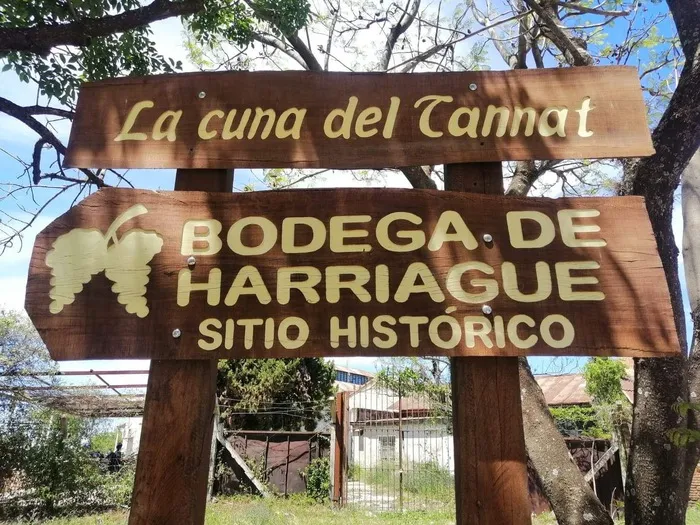
Espacio Cultural Bodega Harriague
Recinto arqueológico e industrial. Cuna donde se implantaron los primeros cuadros de Tannat en 1874. Proyecto patrimonial U-riharri.
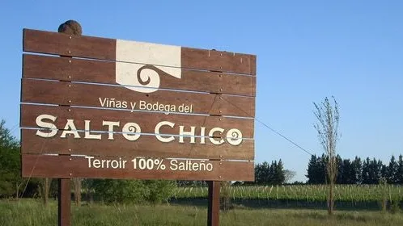
Bodega Salto Chico
Viñedos sobre cascadas basálticas. 6 hectáreas de cepas europeas y moderna tecnología de vinificación artesanal.

Bodega Bertolini & Broglio
19 hectáreas de viñedos conducidos en parrales. Pioneros en vinificación por gravedad y creadores del premiado Tannat Exotic.

Mori Maglio Wines
Tradición vitivinícola viva en Parada Daymán. Vinos de autor con identidad territorial y maridajes gourmet de cordero y cítricos salteños.
Se abre el cuadro de impresión: elegí «Guardar como PDF» para llevarlo en el celular.
Un Circuito Pensado para Perdurar
La Ruta del Tannat no busca escalar como industria, sino sostenerse como comunidad. Cuatro principios guían cada decisión del circuito.
Terroir con Identidad Propia
El Tannat encontró en los suelos basálticos de Salto su lugar en el mundo: una cepa arraigada al territorio, no una variedad importada para forzar un mercado.
Grupos Reducidos, Bajo Impacto
Visitas guiadas a escala humana, pensadas para no saturar bodegas centenarias ni el entorno natural que las rodea.
Bodegas Familiares, no Industria
El circuito prioriza bodegas boutique y familiares por sobre la producción masiva, sosteniendo oficios y economías locales.
Coordinación Directa, sin Intermediarios
Cada reserva se coordina en forma directa con los organizadores locales, para que el valor del turismo quede en el territorio.
¿Cuándo Vivir la Experiencia?
Cada estación del año transforma el paisaje de Salto y revela una faceta única de la uva, la vendimia y las cavas.
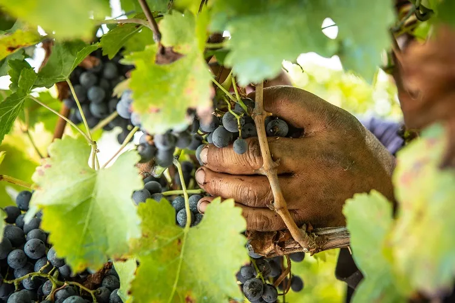
Temporada de Vendimia
El momento cumbre del año: cosecha manual al amanecer, degustación de uvas directas del racimo, visitas crepusculares y pisada tradicional en lagares.
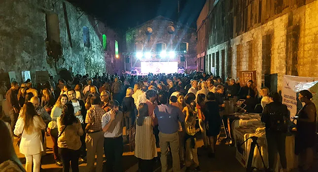
Semana de Harriague
14 de Abril: Día Nacional del Tannat en homenaje al natalicio de Don Pascual Harriague. Viñedos en tonos dorados, festivales vascos y cata de varietales jóvenes.
Poda, Cavas & Fogones
Cata de vinos Gran Reserva y tintos de guarda junto a la chimenea en bodegas boutique, con maridajes de cordero salteño al asador y guisados criollos.
Brotación & Envero
Renacimiento del viñedo con el brote de los primeros pámpanos. Clima templado ideal para paseos en bicicleta costaneros, picnics campestres y copas de vino al aire libre.
Fotografías cedidas para este proyecto por INAVI (cosecha de vendimia) y Bodegas del Uruguay (Semana de Harriague).
Cómo Llegar y Cuánto Quedarte
Salto está más cerca de lo que pensás, y el circuito se adapta al tiempo que tengas disponible.
Por la Ruta 3
Unos 490 km desde Montevideo por la Ruta 3 "Gral. José Gervasio Artigas", el corredor que une la capital con todo el litoral norte.
Ver más →En Avión
El Aeropuerto Nueva Hespérides (STY) tiene vuelos directos a Montevideo con Paranair — la opción más rápida si venís desde más lejos.
Ver más →Duración Recomendada
Desde una escapada de medio día (4 horas) hasta el circuito completo de jornada entera por las 4 estaciones con pase termal — ver Paquetes más abajo.
Ver más →Vino & Aguas Termales: La Alianza Salteña de Bienestar
Salto tiene un privilegio geográfico único en el Cono Sur: es la cuna del Tannat y, al mismo tiempo, la capital termal del Uruguay, alimentada por las aguas del Acuífero Guaraní. Después de recorrer las bodegas, el circuito se completa naturalmente con un baño termal.
Termas del Daymán (A 5 min de las Cavas)
Aguas hipertermales de hasta 44°C con propiedades relajantes, a minutos de Bertolini & Broglio y Mori Maglio Wines. El complejo termal más visitado de Salto, con piscinas para toda la familia.
Termas del Arapey
El complejo termal más antiguo del país, a unos 80 km de la ciudad sobre el río Arapey Grande. Ideal para quienes quieren extender la estadía un día más después del circuito.
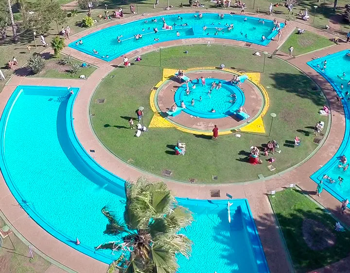
Termas del Daymán
A pocos minutos de las bodegas del circuito
Dónde Alojarse
Tres zonas reales para armar tu base, según cuánto quieras alejarte del circuito y si buscás piscinas termales propias.
Centro de Salto
Hoteles urbanos clásicos, ideales para moverse desde el centro. Entre las opciones conocidas: Gran Hotel Uruguay, Hotel Español y Hotel El Dorado.
Termas del Daymán
A minutos de Bertolini & Broglio y Mori Maglio Wines. Complejos con piscina termal propia como Hotel Termal Daymán, Hotel Mirador del Daymán y Posada del Siglo XIX, además de cabañas y camping.
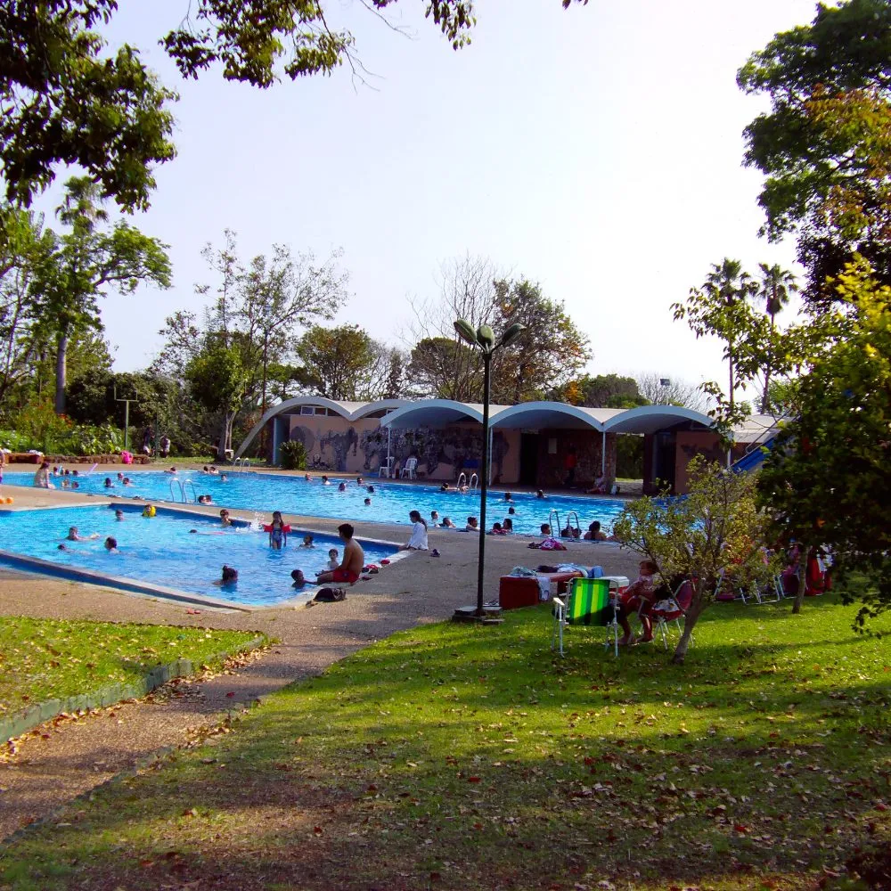
Termas del Arapey
La zona termal de mayor escala, sobre el río Arapey Grande. Resorts como Arapey Thermal Resort & Spa y Altos del Arapey, ideales para sumar un día de descanso después del circuito.
Alojamientos mencionados a modo informativo; no son partners comerciales de este proyecto. Coordiná tu reserva directamente con cada establecimiento.
Paquetes & Visitas Guiadas
Diseñados por técnicos en turismo con traslados inclusivos, degustación guiada por sommeliers y acceso prioritario.
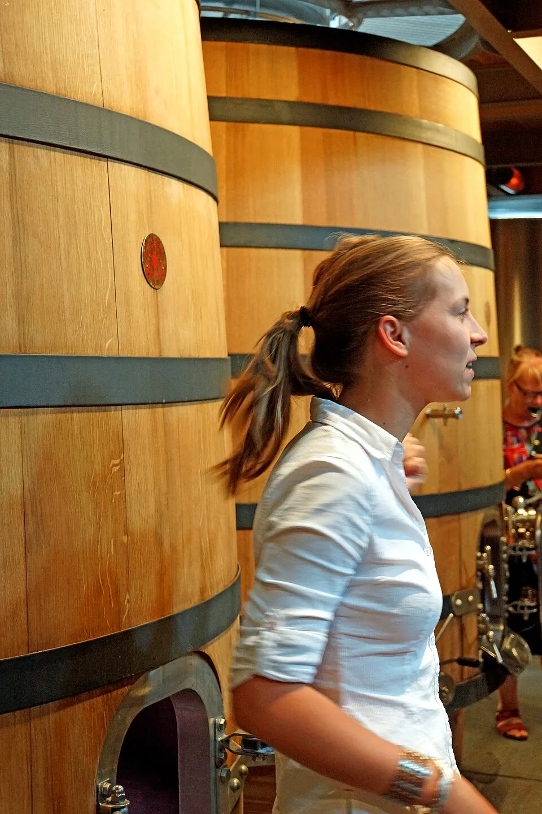
Medio Día · 4 HorasVinos e Historias
Ideal para quienes desean sumergirse en la historia de Don Pascual Harriague y disfrutar de una cata guiada junto a la costa del río.
- Visita guiada a Bodega Harriague (Punto Cero)
- Recorrido y cata de 3 varietales en Bodega Salto Chico
- Tabla de quesos artesanales y panes de campo
- Traslado en van ejecutiva desde centro o termas
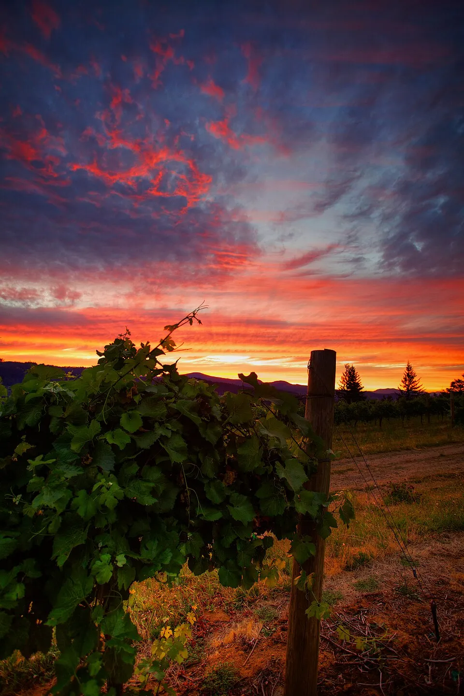
Día Completo · 8 HorasEl Legado del Tannat
Circuito integral por las 4 estaciones de la Ruta, con almuerzo maridaje de 4 pasos, cata de vinos premiados y pase termal de cortesía.
- Paseo completo por las 4 estaciones del circuito
- Almuerzo maridaje en bodega: Cordero y Tannat
- Cata técnica de 6 vinos Gran Reserva y premiados
- Entrada relax a Termas del Daymán / San Nicanor
Experiencia Grupal & Corporativa
Pensado para grupos de 10 o más personas, eventos corporativos, despedidas y celebraciones. Armamos el itinerario, el menú y los traslados según el tamaño y el perfil del grupo.
- Itinerario flexible entre las 4 estaciones del circuito
- Traslados en vehículos de mayor capacidad
- Menú y maridaje adaptables al grupo
- Tarifas preferenciales según cantidad de personas
¿Cuál elijo?
Deslizá hacia el costado para ver las 3 columnas →
| Característica | Vinos e Historias | El Legado del Tannat | Experiencia Grupal & Corporativa |
|---|---|---|---|
| Duración | 4 horas | 8 horas | A medida |
| Bodegas incluidas | 2 bodegas | Las 4 estaciones | A medida |
| Almuerzo maridaje | — | Cordero y Tannat (4 pasos) | Personalizable |
| Acceso termal | — | Daymán / San Nicanor | A coordinar |
| Traslado incluido | Sí | Sí | Sí, vehículo de mayor capacidad |
| Ideal para | Parejas o tiempo limitado | La experiencia completa | Grupos de 10+, empresas, eventos |
Fotografías ilustrativas bajo licencia Creative Commons (Wikimedia Commons) — no corresponden a las bodegas de Salto retratadas en este circuito. Crédito: Dennis G. Jarvis, Zach Dischner y Liezenorval.
Pagá tu Experiencia desde Cualquier Parte del Mundo
Un sistema de pago propio, pensado para el visitante internacional: tarjetas, billeteras digitales y la moneda que prefieras.
- Aceptamos las principales tarjetas y billeteras digitales del mundo
- Cotizá y reservá tu experiencia en tu propia moneda
- Conexión cifrada de extremo a extremo en cada paso
- Confirmación inmediata de tu solicitud de reserva
Pasarela de pago ilustrativa, desarrollada como parte del proyecto académico. La confirmación final de cada reserva se coordina de forma directa por WhatsApp.
•••• •••• •••• 1874
Voces del Circuito
Un proyecto recién nacido, pero respaldado por instituciones con historia. Así lo sostenemos hoy.
Guías Certificados
Formados en la Tecnicatura en Diseño de Itinerarios Turísticos Sostenibles de UTU (DGETP), en el mismo Polo Educativo Tecnológico Salto que sostiene este proyecto.
Viticultura Certificada
Bodegas alineadas al Programa de Viticultura Sostenible de INAVI, auditado por LSQA, bajo el sello "Uruguay Sustainable Winegrowing".
Patrimonio Respaldado
El rescate de Bodega Harriague cuenta con el acompañamiento de la Comisión Honoraria del Patrimonio Histórico de Salto y la Universidad del País Vasco.
Lo que cuentan quienes ya hicieron el circuito
Publicamos las opiniones reales de visitantes, sean elogios o críticas. Solo descartamos spam, insultos y datos personales.
Foto: INAVI
¿Ya hiciste el circuito?
Este proyecto está dando sus primeros pasos. Contanos cómo fue tu experiencia y ayudanos a construir, con casos reales, esta sección.
Publicamos elogios y críticas por igual.
Nuestra Misión y Visión
Nuestra misión es acercar a cada visitante a la cuna del Tannat a través de un circuito auténtico y de cercanía. Nuestra visión es que Salto se consolide como referente del enoturismo sostenible en el litoral norte, sin perder la identidad que lo hizo posible.
Turismo Comunitario & Local
Fomentamos el empleo de guías egresados de UTU, productores artesanales y transportistas locales de Salto, para que cada visita genere desarrollo económico real dentro de la propia comunidad.
Los guías del circuito se forman en la Tecnicatura en Diseño de Itinerarios Turísticos Sostenibles de la propia UTU (DGETP), que capacita por niveles —Guía Turístico Básico, Técnico en Itinerarios Turísticos y Tecnólogo— dentro del mismo Polo Educativo Tecnológico Salto que sostiene este proyecto.
Viticultura Sostenible
Prácticas de bajo impacto ambiental, cuidado del agua del Acuífero Guaraní y protección del suelo basáltico, para que la tierra que le dio identidad al Tannat siga produciendo por generaciones.
A nivel nacional, INAVI impulsa el Programa de Viticultura Sostenible: una certificación voluntaria auditada por LSQA y alineada con la OIV. Los viñedos certificados reciben el sello "Uruguay Sustainable Winegrowing" — en 2023 ya sumaba 162 viñedos, el 31% de la superficie vitícola del país.
Rescate Patrimonial
Compromiso activo en la conservación de las ruinas de Bodega Harriague junto a la Intendencia y la Universidad del País Vasco, manteniendo viva la historia de Pascual Harriague para quienes recién la están descubriendo.
El rescate cuenta con el respaldo de la Comisión Honoraria del Patrimonio Histórico de Salto, que puso en valor el sitio y la figura de Harriague desde la década de 1980, y con la participación de la Comisión del Patrimonio Cultural de la Nación en el proyecto de recuperación — además del acompañamiento internacional de la Universidad del País Vasco a través de U-riharri.
Galería
Imágenes reales de las bodegas, los viñedos y las termas que forman parte del circuito.
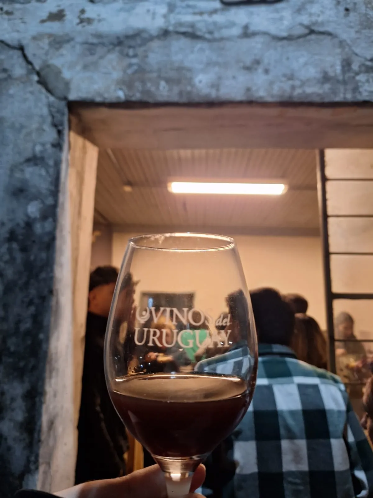
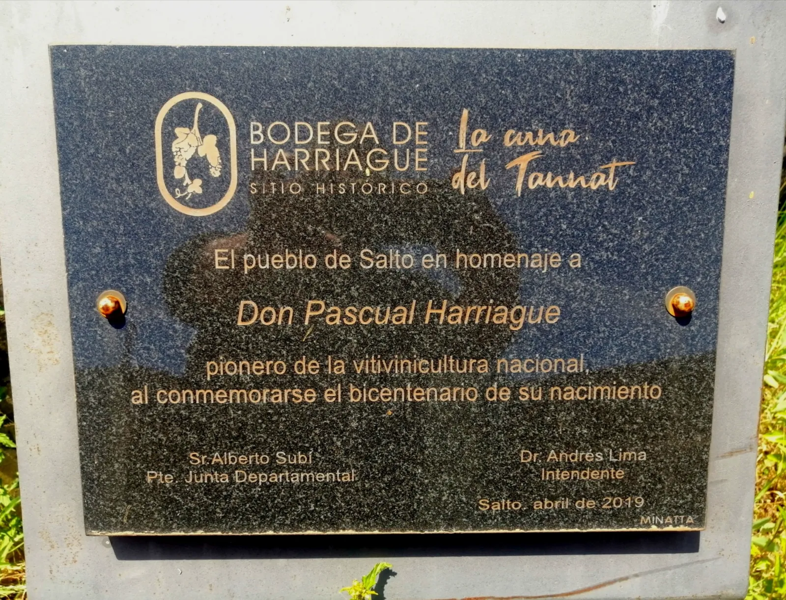

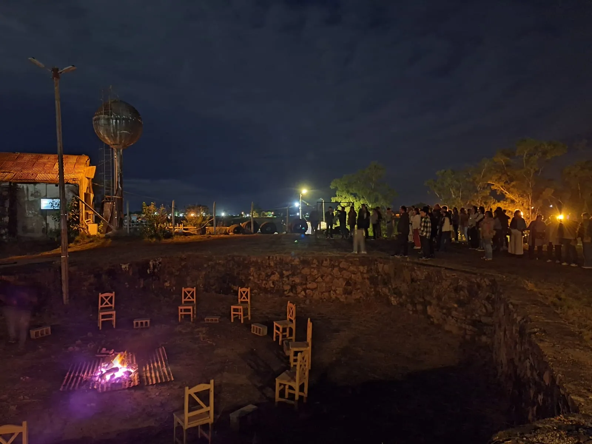
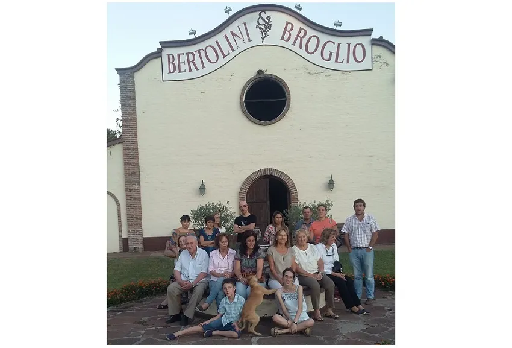
Fotografías: archivo propio del proyecto (cata de vinos y visita grupal en las cavas, por Homero Texeira; placa homenaje y productores en Bertolini & Broglio) e INAVI · Wikimedia Commons — Alejgon (Termas del Arapey, CC BY-SA 4.0), colaboradores de Wikimedia (Salto desde el puerto y Fiesta de la Vendimia 1985, CC BY-SA/GFDL; copa de Tannat uruguayo, CC BY-SA), INAVI (retrato de Pascual Harriague, dominio público; foto de la Semana de Harriague, cedida por Bodegas del Uruguay).
Preguntas Frecuentes
Todo lo que necesitas saber antes de iniciar tu recorrido por la cuna del Tannat.
Todas nuestras experiencias continúan normalmente. Las visitas a viñedos se adaptan hacia las cavas históricas subterráneas, salas de barricas y salones de cata climatizados para garantizar su confort y seguridad.
Sí. Los paquetes incluyen servicio de recogida y regreso tanto en hoteles del centro de la ciudad de Salto como en la zona termal de Daymán y Arapey (previa coordinación al momento de la reserva).
Por supuesto. Disponemos de jugos de uva 100% naturales artesanales, aguas saborizadas con cítricos de Salto y opciones gastronómicas especiales para menores y personas abstemias, manteniendo la tarifa preferencial de acompañante.
Recomendamos ropa cómoda, sombrero o gorro para el sol y calzado cerrado y bajo para caminar con total tranquilidad por los senderos de viñedos y las áreas de suelo basáltico.
Usá el botón «Reservar Ahora», elegí el paquete y completá el formulario: se arma un mensaje de WhatsApp con tus datos que enviás desde tu propio teléfono. No hace falta crear una cuenta. El equipo coordina con las bodegas y te confirma horarios, cupos y precios por ese mismo chat.
Por ahora no: el sitio no procesa pagos. La sección de pagos es una demostración ilustrativa de este proyecto académico y los precios (en dólares y pesos uruguayos) son de referencia. La confirmación final de cada reserva se coordina de forma directa por WhatsApp.
Depende del tiempo que tengas: desde una escapada de medio día (unas 4 horas) hasta el circuito completo, de jornada entera, por las 4 estaciones con pase termal. En Paquetes está el detalle de cada opción.
Por la Ruta 3: Salto está a unos 490 km de Montevideo, alrededor de 6 horas en auto. La ciudad también tiene aeropuerto (Nueva Hespérides, código STY). Si venís desde Argentina, el puente internacional de la represa de Salto Grande conecta Concordia con Salto. El detalle está en «Cómo Llegar y Cuánto Quedarte».
Todo el año: cada estación muestra algo distinto. La vendimia es el momento cumbre (cosecha manual y pisada tradicional en lagares); el 14 de abril es el Día Nacional del Tannat, en homenaje al natalicio de Don Pascual Harriague; en invierno hay catas de vinos de guarda junto a la chimenea; y en primavera, con el clima templado, paseos y copas al aire libre.
Hay tres zonas: el centro de Salto (punto de partida), Termas del Daymán (a unos 10 km, con complejos termales) y Termas del Arapey (a unos 80 km, para extender el viaje). Los alojamientos que mencionamos son solo informativos y no son partners comerciales de este proyecto: coordiná tu reserva directamente con cada establecimiento.
Somos estudiantes, no una agencia consolidada: este es el proyecto final de Federico Camara, Homero Texeira y Anthony Moreira, del Polo Educativo Tecnológico Salto (DGETP-UTU). Es un proyecto estudiantil en marcha; las visitas se coordinan directamente con las bodegas por WhatsApp.
Sí, en la sección «Voces del Circuito». Publicamos las opiniones reales de visitantes, sean elogios o críticas; solo descartamos spam, insultos y datos personales. Cada opinión se revisa a mano antes de publicarse.
No usamos cookies. Solo contamos de forma anónima cuántas veces se abre la página y cuántos toques reciben algunos botones (WhatsApp, reservas, itinerario y La Copa), sin guardar tu dirección IP ni ningún identificador. Si tu navegador tiene activado «No rastrear», no contamos nada. El detalle está en la Política de Privacidad, al pie de la página.

Federico · Homero · Anthony
Estudiantes de la Tecnicatura en Diseño de Itinerarios Turísticos Sostenibles
Quiénes Sostienen este Proyecto
La Ruta del Tannat nace como proyecto de egreso de tres estudiantes de la Tecnicatura en Diseño de Itinerarios Turísticos Sostenibles del Polo Educativo Tecnológico Salto (DGETP-UTU): Federico Camara, Homero Texeira y Anthony Moreira.
Durante su formación relevaron de primera mano la historia de Pascual Harriague, el estado de las bodegas boutique de Salto y el potencial del circuito enoturístico junto a las termas del litoral norte — y decidieron convertir ese trabajo académico en una herramienta real para dar a conocer el departamento.